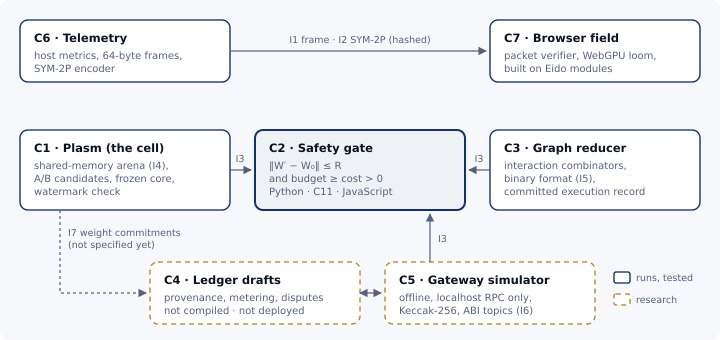

Abstract
ML Weft is an open research program from Moissanite Labs. It studies models that keep adapting after deployment, under limits that a program can verify. It treats each model as a cell: a bounded piece of memory with a frozen core, a resource budget, and a rule that commits a change only if the change stays within a measured distance of a saved baseline. Around that core idea, Weft builds compact verifiable formats (hashed message packets and a serialised graph language with committed execution records) and a design language, Eido, for interfaces that show live state honestly. Further out, it asks how such systems could run on purpose-built hardware and how people could govern them. This paper describes the whole program and is strict about evidence: it labels every component as running and tested, simulated, or design only. It also explains what Weft is not. It is not a product, it has no token, and its biological vocabulary describes aims, not achievements. Companion papers cover each part in depth: Paper 1, Models as Cells, and Paper 2, Checkable Computation, are published alongside this one.
Keywords: adaptive models, AI safety, verification, continual learning, interaction combinators, design systems, governance
1. The problem
Machine-learning models are mostly built once and then frozen. When they change, it is through a retraining or fine-tuning run that someone starts, watches and accepts. That has worked because change was rare and deliberate. It works less well as models move onto personal devices, adapt to individual users, and act as agents in long-running systems. These are settings where small, continual changes are useful, and nobody is watching each one.
Continual adaptation without limits is a safety problem as much as an engineering one. A model that can rewrite itself can also drift away from the behaviour it was approved for. Today, the limits on that drift are usually procedural: reviews, evaluations, and policies on who may run training. They are rarely executable: a predicate that runs on every update and refuses the ones that cross a line.
Weft asks what it would take to make those limits executable. It starts at the smallest scale where the question makes sense, a single weight matrix in memory, and works outward from there.
2. Principles
The program works by five rules. They shape the code more than any architecture diagram does.
- Bound change from a saved baseline. A model may move, but only within a fixed distance of weights that were approved. That distance is measured from the baseline, not from yesterday’s weights, so small steps cannot add up to a large drift (Paper 1, §4).
- A stated rule is not a checked rule. Each safety property is written as a function, tested against shared vectors, and called on the executable path. Documents say which rules are enforced and which are only intended.
- Keep the vision language, label the evidence. Weft uses biological words on purpose: cell, membrane, mitosis, homeostasis. They name behaviour the design aims for and give the project its character. Every such word is paired with a plain description of what the code does today (glossary).
- Small, verifiable interfaces. Components talk through narrow formats with exact layouts and integrity checks: a 64-byte frame, a hashed message line, a binary graph format. Each is small enough to specify completely and test from more than one language.
- Nothing live. No component deploys contracts, moves weights between machines, or touches privileged hardware. Experiments run locally. There is no token.
3. Architecture
Weft is built as seven components (C1–C7) joined by numbered interfaces (I1–I7). Figure 1 shows how they connect.

C1 · Plasm: the cell. A fixed 540,688-byte shared-memory arena holds one weight matrix, a scalar telemetry ring and a small recency buffer. Each generation the cell proposes two candidate updates (a cautious and an exploratory lineage), scores the exact matrices it would commit, and commits at most one. A quarter of the rows form a frozen core that carries a provenance watermark. Status: runs, tested. Paper 1 covers it in detail.
C2 · Invariants: the safety gate. A pure predicate accepts an update only if and , rejecting non-finite values first. It is implemented in Python, in a C11 header for environments without Python, and in JavaScript for the browser. Python and JavaScript are tested against one JSON file of conformance vectors. The C header is tested against hand-written copies of most of those cases, and running the shared file in C is an open issue. Status: runs, tested.
C3 · IC: checkable computation. A reducer for interaction combinators (a minimal graph-rewriting model of computation, due to Lafont) runs in a flat preallocated array. It has a canonical binary format and an execution record that commits to the initial graph, every step and the final graph with SHA-256. Weft adds node types that route a reduction through the safety gate. Status: runs, tested. Confluence of this variant is not proven. Paper 2 tests it against an independent reference.
C6 · Telemetry and the telemetry line. Host metrics are packed into a 64-byte frame of sixteen floats (I1). Live state travels as a compact line (I2): a role byte, an action byte, a sequence number, an s-expression payload, and the SHA-256 of the payload. The line is an early dialect from Weft’s design sessions. Weft’s agent-messaging protocol is now published separately as abios, whose normative profile is one canonical JSON object per line, and moving telemetry onto it is open work. The line’s hash detects accidental corruption, not tampering, and does not cover the header (Paper 2, §6.6). Status: runs, tested. The data shipped with the website is a labelled fixture, not a live feed.
C7 · The browser field. A WebGPU renderer, with a Canvas2D fallback, draws live state as a field of cells. A worker verifies every packet’s hash before any value reaches the screen. Status: runs, tested in Node and Chromium.
C4 and C5 · Ledger research. Three Solidity drafts explore provenance (who contributed to a model), metering, and disputes. An offline simulator, a pure-Python Keccak-256 and ABI checks exercise their logic without a chain. Status: the contracts are research drafts. They are not compiled in CI and are deployed nowhere. The simulator only simulates. Weight commitments (I7), which provenance would need, are not specified yet.
4. Evidence status
| Component | What runs today | What is not shown |
|---|---|---|
| C1 Plasm | 256×256 cell; A/B candidates; frozen core with zero measured drift; watermark retention; clean teardown | trained models; process isolation; meaningful lineage selection; calibrated radius |
| C2 Gate | Python passes all 12 shared vectors; JavaScript the 6 weight-update vectors; C11 hand-coded copies of most cases | C reading the shared vectors (#42); mechanised proof (planned in Lean) |
| C3 IC | reduction, binary round-trips, committed execution records | confluence of the extended rules; GPU reduction |
| C6 Telemetry | frame packing, telemetry-line encode/verify (payload hash only), honest “unavailable” probes | live, provenance-checked organisation data |
| C7 Field | packet verification in a worker; WebGPU and Canvas2D renderers | any model running in the browser |
| C4/C5 Ledger | offline simulation, ABI topic hashes | compiled contracts, any chain, any token |
| Hardware | wrappers for Apple Silicon around the CPU path | native Metal kernels, MPS measurements, custom silicon |
Continuous integration runs the Python, C and Node tests and the browser tests on every change. It also requires a clean working tree afterwards, so no test may rewrite tracked files.
5. Horizons
Weft is organised as four horizons. Each keeps the interfaces of the one before. They are directions, not dates.
Horizon 0: the symbolic seed. A compact, checkable language for agents to exchange state, and the habit of auditing every claim against something that can fail. In use.
Horizon I: cells on a laptop. Models as cells in the unified memory of commodity hardware such as Apple Silicon, under the safety gate. The CPU path runs today. The next steps are calibration on trained networks, low-rank adapters as the adaptable periphery, MPS measurements, and a mechanised proof of the gate. In progress.
Horizon II: the physical loom. If the gate matters, it should be hard to bypass. The research agenda moves it down the stack in three stages:
- a minimal kernel that owns the memory holding the weights;
- a memory-controller design that refuses weight writes outside the ball around the baseline;
- longer term, computing fabrics in which graph reduction maps onto physical layout.
None of this exists yet. Design research.
Horizon III: the shared weave. Adaptive models raise social questions:
- whose work a model carries, and whether attribution survives fine-tuning;
- how use is metered fairly;
- who may loosen a limit;
- how a decision is appealed, and what happens when maintainers change.
Weft’s design notes compare the stated rules (human approval, dual signatures) with what the example contracts actually enforce (often a single privileged key), and treat that gap as the first research problem. Design research. Paper 4 (planned) covers it.
6. Eido: the design language
Interfaces are part of the safety story: a system whose state can’t be seen can’t be supervised. Eido (developed under the internal name Aywa) is Weft’s design language. Its central idea is that a visual style is a point in a continuous space rather than a fixed theme. Styles are blended with barycentric weights, and hue is averaged on a circle so that two reds don’t blend into cyan. Its layouts give each visual channel exactly one quantity to encode, and it treats verified, compact state as a design material. Eido’s modules are maintained in Moissanite-Labs/weft-eido, and they run the demos on w3ft.org. Paper 3 (in preparation) covers it.
7. What Weft is not
- Not a product. Weft is early research. Its code runs small experiments, not production systems.
- Not a token or a financial instrument. Weft has no coin, token or sale, and nothing is deployed on any blockchain. The ledger drafts study attribution and disputes. They do not issue or sell anything.
- Not a claim about minds. Weft separates three things that its source conversations sometimes ran together:
- a style or policy that a living person chooses to leave behind, which is a matter of consent and specification;
- a model that predicts a person’s choices, which can be tested while they are alive;
- the survival of a person or their experience, which Weft makes no claim about.
- Not finished biology. The cellular vocabulary names ideals. Where the code is simpler than the word, for example “tension” is currently a function of distance, the papers say so.
8. Origins and method
Weft began as a long design conversation between a person and AI assistants. The record is kept word for word in Moissanite-Labs/weft-corpus. It is rich in ideas, and it often narrates things that never happened: commands that print plausible output, contracts “sealed on-chain”. The project’s first task was to separate the two. An evidence ledger records, file by file, what was kept, repaired or set aside, and a claims register tracks every claim’s status. Several repairs came straight from that reading:
- the safety check compared the sizes of two weight matrices instead of the distance between them;
- the budget was decremented before it was checked;
- a hash-verification routine treated a missing hash as valid.
Code and documents are written with substantial help from AI tools and reviewed through pull requests. Every commit is signed off by a person under the Developer Certificate of Origin.
9. The paper series
| # | Title | Scope | Status |
|---|---|---|---|
| 0 | ML Weft: adaptive models within bounds you can check | this overview | published |
| 1 | Models as Cells | the cell and the safety gate, with experiments | published |
| 2 | Checkable Computation | interaction combinators, the binary graph format, committed execution records, the telemetry line | published |
| 3 | Eido | the design language | in preparation |
| 4 | Constitution vs. Contract | provenance, metering and governance | planned |
Each paper is versioned, names the repository commit it describes, and includes the commands that reproduce its results.
10. Taking part
The code is under the Apache License 2.0, and the documents under CC BY 4.0. The most useful contributions make a claim testable or show that one is wrong. The repository’s contributing guide describes the evidence rules, and open issues list concrete next steps:
- one conformance corpus for Python and C;
- state contracts for the graph reducer;
- compiling the ledger drafts locally;
- honest labels on telemetry;
- reproducible experiment reports.
References
- ML Weft. Paper 1: Models as Cells. https://siliconcordat.org/weft/papers/models-as-cells/.
- ML Weft repository. https://github.com/Moissanite-Labs/weft.
- Eido. https://github.com/Moissanite-Labs/weft-eido.
- Weft corpus. https://github.com/Moissanite-Labs/weft-corpus.
- abios, the agent-messaging protocol (SYM-2P). https://github.com/Moissanite-Labs/abios.
- Lafont, Y. (1997). Interaction combinators. Information and Computation 137(1), 69–101.
- ML Weft. Constitution vs. contract (design note).
docs/design-notes/constitution-vs-contract.md.
Cite this paper
@techreport{mlweft2026paper0,
title = {{ML Weft: Adaptive models within bounds you can check}},
author = {Ahraz Arifuddin},
institution = {Moissanite Labs},
type = {ML Weft Paper},
number = {0},
year = {2026},
month = nov,
note = {Version 1.1},
url = {https://siliconcordat.org/weft/papers/overview/}
}
Version 1.1, 8 November 2026. Describes repository commit
a18fc40.
Text and figures are licensed under CC BY 4.0, and the code is licensed under Apache-2.0.
Found an error? Open an issue. Earlier PDF editions: v1.0.